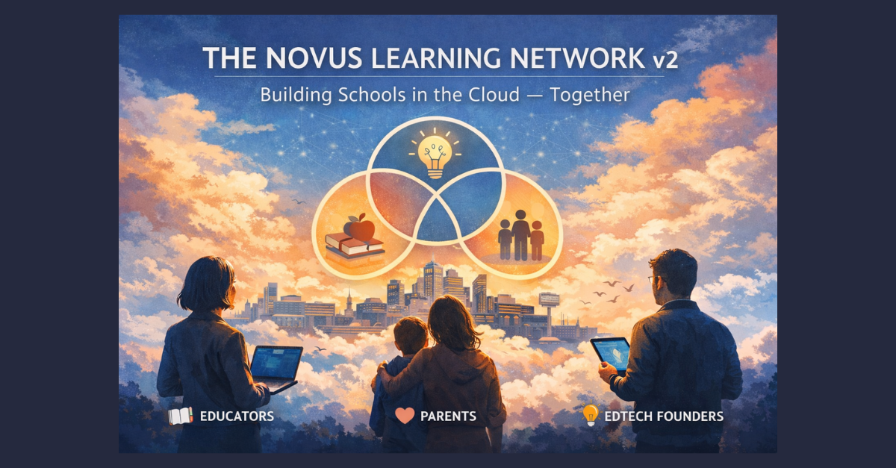

From Robots to Relationships: Field Notes with NLN

Hybrid schooling is often framed as a technology problem. This week’s NLN conversation reminded me it’s a human problem with technological consequences.
We started with power cuts—literal ones. Between outages, a colleague demoed a “History of Maths” metaverse: Hanging Gardens to pyramids to Mayan temples, stitched with short generative films. It’s gorgeous—and expensive. Each ten-second clip devoured credits. When the model misfired, you could feel the cost of a bad prompt.
Lesson one from Gerry Docherty : every question burns energy—literal watts and human hope. In a compute age, careless prompting isn’t just inefficient; it’s extractive. So we teach inquiry as stewardship: slow down, specify, check assumptions, then ask.
Meanwhile, another thread: the Wellbeing Compass—values × feelings × purpose—developed by Kimberley Olliff Cooper (ThriveNow) and used here with permission. We’re co-designing with teenagers who don’t need another poster; they need a handle. We map a simple Venn: What matters to me? How do I want to feel? Why am I doing this? The overlap becomes a weekly compass. The first 1% change is noticing it exists; the second is language; the third is environment design that respects it. Read Kimberley's Substack here.
This isn’t separate from “the robot question.” It answers it. If school is only content delivery, then of course a recording or an AI tutor seems “good enough.”
But if school is the choreography of energy—pacing, breath, co-regulation, courage—then human presence is the main event, and AI is a power tool on the side.
Parents keep telling us the same thing. Paul Glossop pointed us to this important research reminding us parents don’t want a robot therapist; they want a kind, non-judgemental human who knows the system, plus clear resources to explore between calls. And yet—at 2 a.m., when the human is asleep and the AI simply listens without sighing, the temptation is real. The danger isn’t replacement; it’s settling for a synthetic stand-in when what heals is a human. Our split is simple:
AI holds the information; people hold the experience. In practice that means an online course with tidy signposting, office hours with a human, and a lightweight companion that can answer “what’s next?” without pretending to care.
As Beth Holmes put it, “Relationships-first pedagogy isn’t soft; it’s the structure that lets learning happen. The tech can help, but it can’t do the attunement.”

Mnemonic Attendance Dashboard (prototype). This is how we operationalise “maps of meaning.” The A-score isn’t minutes; it’s relational presence:
E (Energy) = time, effort and micro-actions (e.g., camera on, emoji, asking for help).
s (Symbolic Coherence) = relevance/meaning signalled by the learner.
c (Connection) = trust and stability with people/places (squared to reflect outsized impact). The dashboard returns an A-score, confidence band, and a plain-English reflection for the learner, with a separate LA/compliance view that avoids deficit framing. All sensitive computation is private; the demo runs client-side for transparency.
Guardrails and ethics (what this isn’t):
Not surveillance: weights are transparent; families see the public legend.
No keystroke or eye-tracking. Only consensual micro-signals (✅ 🌱 👀 💬 📸).
Human-in-the-loop reviews outliers; the score never stands alone.
Exportable JSON snapshots support auditing and appeals.
Why the confidence metric matters: 79% confidence tells us whether to act or to ask better questions. Low confidence triggers reflection, not punishment.
Assessment sits underneath all of this. Traditional targets miss signals that matter in SEND contexts.
A learner who doesn’t usually stay the lesson but sits, listens, and sends a single emoji has done something heavy.
Our maps of meaning treat those micro-moves as legitimate data: camera on, typed in chat, asked for help, opened Canvas, clicked resource, returned after a break, shared a photo from outside. Each action carries a weight; over weeks you see a pattern. Not surveillance. A mirror that says: you showed up.
A design principle we keep coming back to: tech should become invisible so people can become visible. Two tabs, one home. Pencil Spaces for making; Canvas for messages and resources. Announcements live in one place. Recordings are a safety net, not a substitute. And the line we keep using because it’s true: AI tutors rehearse the scales; humans make the music.
Global families, shown not told. A learner in Manila watches a three-minute recap at 07:00, practises with AI at lunch, then joins a live human circle at 20:00 local. The AI never says “good job”; it simply unlocks the next door when they’re ready. The relationship is the curriculum; the tooling is the bridge.
Provocative takeaway: the question “Live, recorded, or robot?” is downstream of purpose.
Decide what school is for first. If it’s human growth, you already know the hierarchy. If it’s content access, any mode will do—until it doesn’t.
Design notes (steal these)
Treat prompts as paid requests. Teach question hygiene: context → constraint → check.
Build the wellbeing compass (values × feelings × purpose) for each learner; revisit fortnightly.
Weight the tiny signals. Publish the micro-moves legend so families know what counts.
Separate roles: AI = library + practice; human = attunement + judgement.
Keep messages in one home. Two tabs at lesson start: workspace + hub.
Use recordings intentionally; publish a plain “What’s in a recording?” note per course.
Ship micro-recaps (two minutes) instead of dumping full lessons.
For global access: record → reflect → human check-in → practice set → showcase.
The robots aren’t coming. They’re already here—holding up mirrors we’ve been avoiding.
CTA: Steal the compass. Pilot the maps. Break my models. DM me your failures—we’ll open-source the fixes.
Join the NLN, Discuss with us in Verse-al Learning Labs, Follow The Novacene on LinkedIn...
#Verseality #RelationalIntelligence #AIethics #MnemonicAttendance
First published in Building Schools in the Cloud on LinkedIn, 9 November 2025.